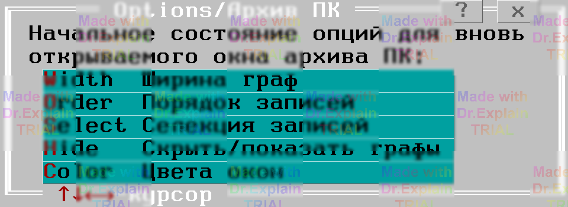

2.2 Команда Compile/Archiv — открыть существующий архив ПК
Compile → Archiv «Открыть архив ПК» (Alt‑A) загружает уже созданный архив программ контроля. Пароль при этом не запрашивается.
Путь к файлу базы данных архива (БДАПК) вводится в окне выбора файла (см. «[11, п. 10.1]»). После подтверждения содержимое архива отображается таблично.
Первоначальный вид таблицы определяется настройками Options → Archiv «Архив программ контроля», показанными на рисунке (описание опций — в разд. «[6, п. 3]»):
